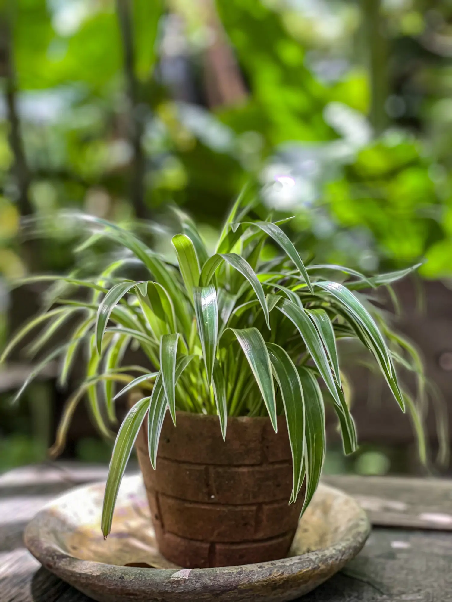

¿Cómo regar correctamente las suculentas?
He notado que muchos principiantes tienen problemas con el riego de suculentas. Aquí les comparto mi técnica que ha funcionado maravillosamente...

He notado que muchos principiantes tienen problemas con el riego de suculentas. Aquí les comparto mi técnica que ha funcionado maravillosamente...
Encontré estas pequeñas plagas blancas en las hojas de mi ficus. ¿Alguien sabe cómo eliminarlas sin químicos agresivos?

Si estás empezando en el mundo de las plantas, estas 5 opciones son perfectas: Pothos, Sansevieria, Suculentas, Spider Plant y ZZ Plant. Son resistentes y requieren poco mantenimiento.
Las hojas amarillas pueden indicar varios problemas: exceso de riego, falta de nutrientes, o poca luz. Aquí les explico cómo identificar cada uno...
Prueba con agua jabonosa y un algodón. Funciona muy bien y es natural.
Hace 3 horas